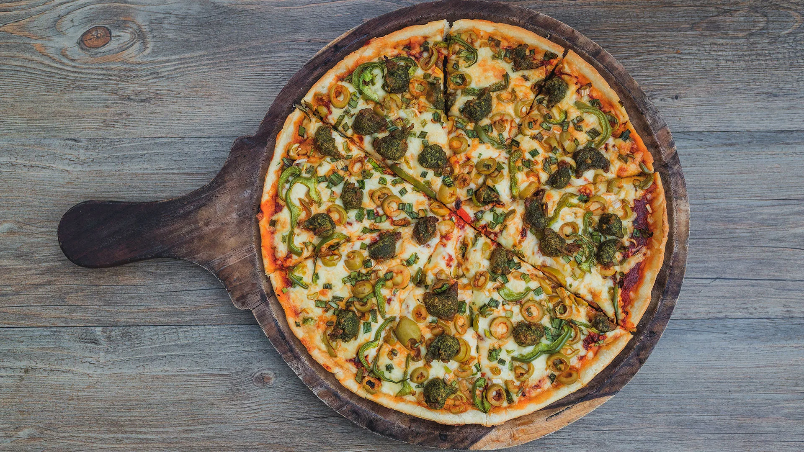
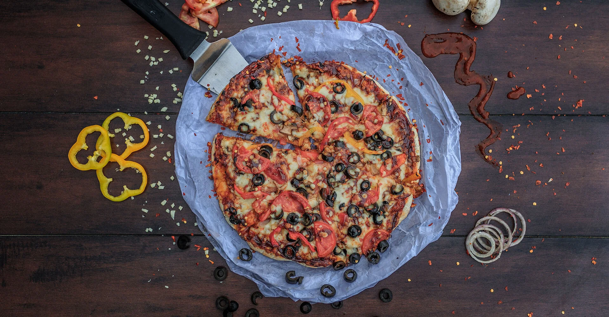
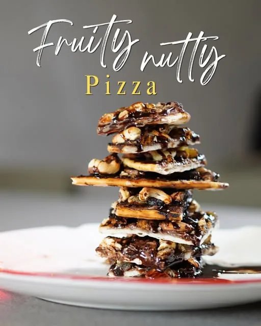
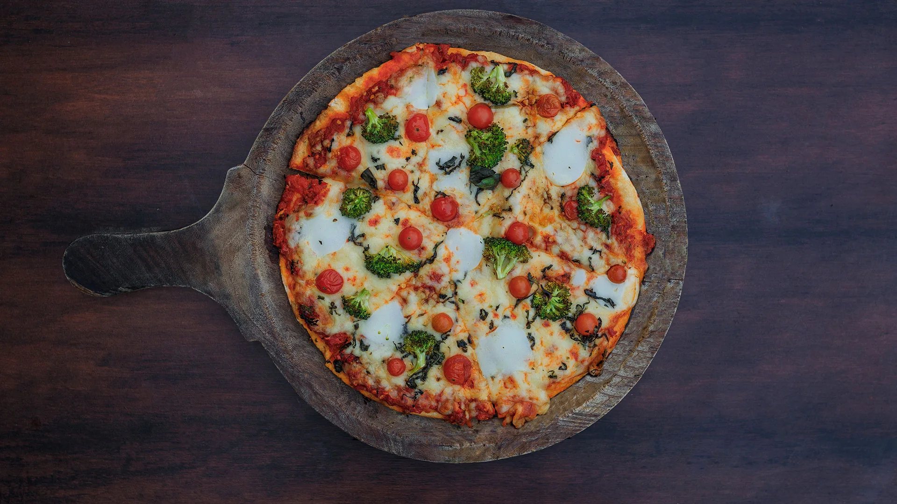

Home Our story
A small town,a big oven
Thirteen years of putting proper Italian-style pizza in front of people who weren't sure they wanted it, until they were.

same dough,
since day one
2013, and a fair amount of nerve
Home from Canadawith a recipe
Mr Prashant Patel and his wife spent years in Canada before coming back to Gujarat, and they came back with one specific idea: authentic Italian flavours, cooked pure vegetarian, in a town that had never been offered either.
The first store opened in Bardoli in 2013. A specialised oven, a short list of pizzas, and a stubborn rule that the ingredients would be the real thing — several of them still arrive from other countries, because that is where the best version of them is made.
People noticed. Then people started driving in from other towns for a single slice, which is a strange and lovely thing to watch happen to your own shop.
— the family, still behind the counter


- 2013The first store opens in Baben, Bardoli. One oven, one counter, a menu you could read in a minute.
- The middle yearsThe menu grows to 143 things: thirty-eight signature pizzas, pasta, garlic breads, salads, and thirty-six toppings to argue over.
- SuratSame legendary pizza, new city, new cravings — a second kitchen on VIP Road in Vesu, under a red steel ceiling.
Pure veg, no asterisk
Every item on every page of the menu. It has been that way since the first day and it isn't up for discussion.
A specialised oven
Not a conveyor. The bases go in where the heat is right and come out when they're ready, which is sooner than you'd think.
Imported where it matters
Some of the exotic ingredients come in from other countries. The cheese bill is the reason the prices are what they are.
Made the way you ask
Jain on a lot of the menu, extra chilli if you want it, no onion if you don't. Say it at the counter and it happens.

What happens back there
Four things we won't hurry
None of this is clever. It's just the part most kitchens skip when it gets busy.
- 01The dough rests as long as it needs to, which is why the crust is neither fluffy nor hard — the thing our regulars mention first.
- 02Cheese goes on by hand, every time, which is how you get the pull people film for Instagram.
- 03Toppings are cut the same day. Thirty-six of them in the fridge, and no, we won't tell you which one is the most ordered.
- 04It leaves the pass the moment it's done, into a red box that says HOT…HOT…HOT…!!! because it means it.
Happy moments
Other people'sdinner, mostly
@psdelicacies — tag us and we'll probably share it